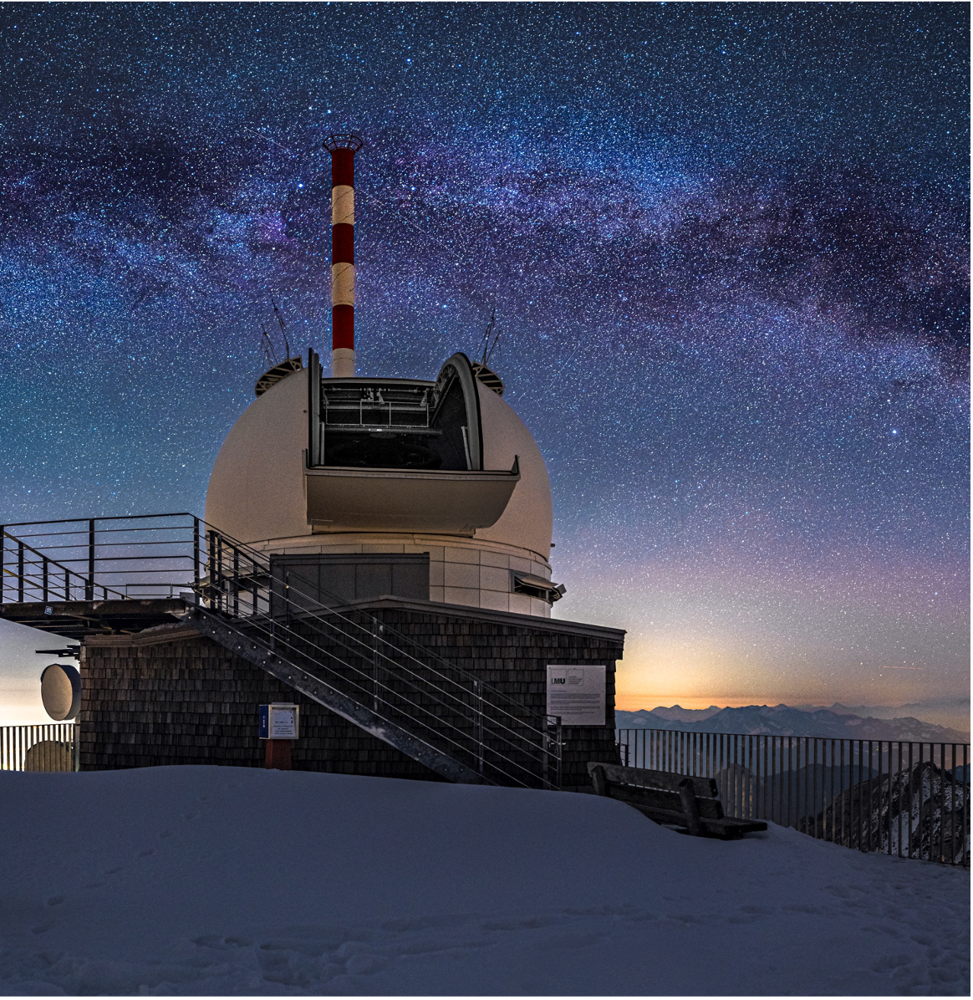
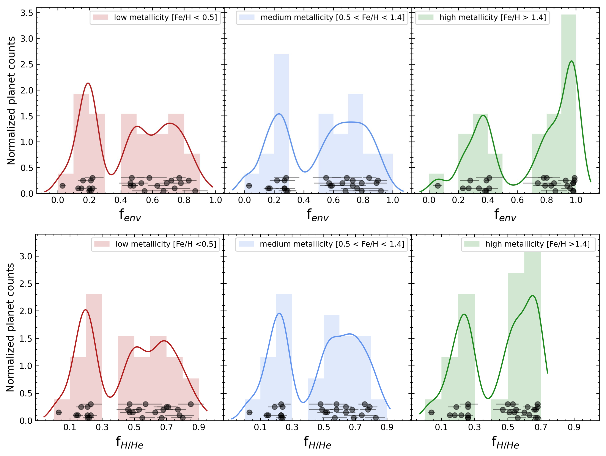

Research
My work focuses on two main topics: detecting new exoplanets with precision radial velocities and understanding the formation and evolution of sub-Saturns.
Exoplanet Detection with MaHPS at Wendelstein
A central pillar of my PhD has been using the Manfred Hirt Planet Finder Spectrograph (MaHPS), a stabilized échelle spectrograph mounted on the 2.1 m Fraunhofer telescope at the Wendelstein Observatory in the Bavarian Alps. MaHPS delivers precise radial velocities, making it a powerful tool for measuring the masses of transiting planet candidates identified by the TESS space mission. Using MaHPS, I have confirmed and characterised multiple new exoplanets spanning a range of masses and orbital architectures. These include two sub-Saturns near the edge of the Neptune desert (Thomas et al. 2025) and a pair of warm Jupiters on notably eccentric orbits, one of which lies on a tidal circularisation track that will eventually bring it to a hot-Jupiter orbit, providing a snapshot of high-eccentricity migration in action (Thomas et al. subm). In addition, I contributed to the long-running radial-velocity survey Search for Giant Planets in M 67 using several other spectrographs (HPF, HARPS, HARPS-North, SOPHIE), which led to the discovery of a warm Jupiter orbiting a turn-off-point star in the cluster (Thomas et al. 2024).


Formation and Evolution of Sub-Saturns
Sub-Saturns (4–8 R⊕) populate the transition region between the Neptunian and Jovian population and thus provide important empirical constraints on the formation of gas giants, in particular, the transition from slow gas accretion in hydrostatic equilibrium to rapid runaway gas accretion. In addition, their period distribution is uniquely structured, with a Neptunian desert at P < 3.2 d containing only very few sub-Saturns, a sharp overdensity of sub-Saturns at the Neptunian ridge (3.2 ≤ P ≤ 5.7 d), and a sparsely populated savanna at longer periods.
Using the interior structure code GASTLI (Acuna et al. 2024), I modelled a sample of warm sub-Saturns to derive their envelope mass fractions. The resulting distribution is bimodal, with a gap that aligns with the theoretical threshold for runaway gas accretion. Sub-Saturns below this gap appear to be planets whose growth stalled before runaway accretion could begin, while those above it managed to trigger runaway accretion and acquired large envelopes. A complementary analysis of the hydrogen-helium mass fraction reveals a second gap at ~30%, corroborating theoretical predictions from planet formation models (Thomas et al. 2025).
Currently, I am working on another population analysis, looking into the occurrence rate of companion planets for sub-Saturns across the Neptunian landscape (desert, ridge, and savanna). The goal is to see whether we can infer the dynamical history of the sub-Saturn from the system architecture and differentiate between possible migration mechanisms. If you are interested in this work or even just a small scientific chat, feel free to contact me via email.
